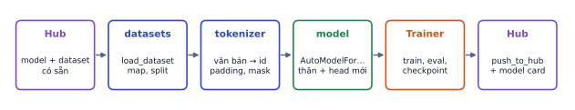
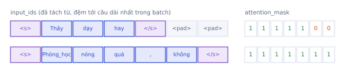
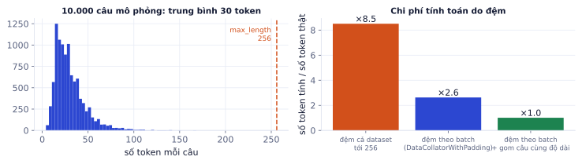
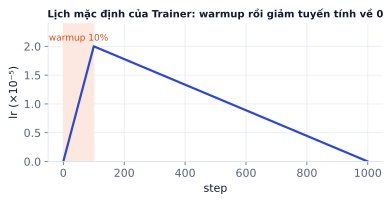

Bài 1
Số bước train
tính tay20.000 câu train, batch 32, 3 epoch, warmup 10% số bước.
Lời giải
20000/32 = 625 bước mỗi epoch, nhân 3 = 1875. Warmup 10% là 187,5, Trainer làm tròn lên 188 bước.
Hugging Face là "GitHub của AI": hàng trăm nghìn model và dataset, cùng bộ thư viện để tải, fine-tune và chia sẻ chúng chỉ trong vài chục dòng code. Bài này dạy bốn thư viện cốt lõi (transformers, tokenizers, datasets, Trainer), cách đẩy model của bạn lên Hub, và những lỗi hay gặp khi fine-tune model tiếng Việt. Phần thực hành fine-tune PhoBERT phân loại cảm xúc tiếng Việt.
Gần như mọi công việc AI Engineer với model mã nguồn mở đều đi qua Hugging Face: tải model, chuẩn bị dữ liệu, fine-tune, chia sẻ kết quả. Thành thạo bộ công cụ này nghĩa là bạn đi từ ý tưởng tới model chạy được trong một buổi chiều.

| Thư viện | Làm gì |
|---|---|
huggingface_hub |
tải và đẩy file lên Hub, đăng nhập, quản lý repo |
transformers |
kiến trúc model (BERT, Llama, ViT…), Auto classes, pipeline, Trainer |
tokenizers |
tokenizer viết bằng Rust, rất nhanh (dùng ngầm qua AutoTokenizer) |
datasets |
tải và xử lý dataset lớn, cache trên đĩa |
evaluate, peft, trl |
metric; fine-tune tiết kiệm (LoRA, P6.1); SFT và DPO (P6.2) |
Mỗi model trên Hub là một repo Git: config.json (kiến trúc), trọng số (model.safetensors), file tokenizer, và README.md (model card).
# Cần mạng: tải model từ Hugging Face (chạy trên Colab); thay <tên-model-trên-Hub> bằng model bạn đã đẩy lên
from transformers import pipeline
clf = pipeline("sentiment-analysis", model="<tên-model-trên-Hub>")
clf("Giảng viên dạy rất dễ hiểu") # [{'label': ..., 'score': ...}]
pipeline gói tokenizer, model và hậu xử lý thành một lệnh. Dùng để thử nhanh một model trước khi quyết định fine-tune.
Có hàng trăm kiến trúc khác nhau. Auto classes cho phép bạn viết một đoạn code dùng được cho mọi model, chỉ đổi tên repo.
# Cần mạng: tải PhoBERT từ Hugging Face (chạy trên Colab)
from transformers import AutoTokenizer, AutoModelForSequenceClassification
tok = AutoTokenizer.from_pretrained("vinai/phobert-base-v2")
model = AutoModelForSequenceClassification.from_pretrained(
"vinai/phobert-base-v2", num_labels=3,
id2label={0: "tiêu cực", 1: "trung tính", 2: "tích cực"},
label2id={"tiêu cực": 0, "trung tính": 1, "tích cực": 2})
Auto* đọc config.json của repo để biết kiến trúc. Hậu tố cho biết head gắn trên thân model:
| Class | Head | Đầu ra | Dùng cho |
|---|---|---|---|
AutoModel |
không có | vector mỗi token | lấy embedding |
AutoModelForSequenceClassification |
Linear trên vector đầu câu | (B, num_labels) | phân loại câu |
AutoModelForTokenClassification |
Linear trên mỗi token | (B, T, num_labels) | nhận dạng thực thể (NER) |
AutoModelForQuestionAnswering |
2 Linear: vị trí bắt đầu, kết thúc | (B, T) × 2 | trích câu trả lời từ đoạn văn |
AutoModelForCausalLM |
Linear ra từ vựng | (B, T, V) | sinh văn bản (GPT, Qwen) |
Head mới được khởi tạo ngẫu nhiên, nên bạn sẽ thấy cảnh báo "Some weights … were newly initialized": đó là bình thường, bạn sắp fine-tune nó. Truyền id2label để model lưu luôn tên nhãn, khi dùng lại khỏi phải nhớ 0 là gì.
Nhầm thân model với model đã fine-tune. vinai/phobert-base-v2 là model pretrain (masked LM), chưa biết phân loại cảm xúc. Gắn head phân loại rồi dùng ngay sẽ cho dự đoán ngẫu nhiên. Phải fine-tune trước, hoặc tìm trên Hub một model đã fine-tune cho đúng tác vụ.
GPU xử lý batch dưới dạng tensor chữ nhật, nhưng các câu dài ngắn khác nhau. Padding, truncation và attention mask là cách biến các câu lệch nhau thành tensor mà model vẫn hiểu đúng.
# Cần tokenizer PhoBERT ở ô trên (chạy trên Colab)
batch = tok(["Thầy dạy hay", "Phòng_học nóng quá , không"],
padding=True, truncation=True, max_length=256, return_tensors="pt")
batch["input_ids"] # (2, T): id token, câu ngắn được đệm bằng pad_token_id
batch["attention_mask"] # (2, T): 1 = token thật, 0 = đệm

| Tham số | Ý nghĩa |
|---|---|
padding=True |
đệm tới câu dài nhất trong lần gọi này |
padding="max_length" |
đệm mọi câu tới max_length (tốn tính toán, xem dưới) |
truncation=True, max_length=256 |
cắt câu dài hơn 256 token |
return_tensors="pt" |
trả về tensor PyTorch thay vì list |
Tokenizer cũng thêm token đặc biệt: PhoBERT (theo RoBERTa) dùng <s> ở đầu và </s> ở cuối; BERT dùng [CLS] và [SEP]. Head phân loại đọc vector của token đầu câu (<s> / [CLS]), vì qua các lớp attention hai chiều, vector này đã tổng hợp thông tin cả câu.
Tiếng Việt viết cách nhau theo âm tiết, không theo từ: "học sinh" là một từ gồm hai âm tiết. PhoBERT được pretrain trên văn bản đã tách từ (nối âm tiết trong một từ bằng dấu gạch dưới), nên đầu vào cũng phải tách từ giống hệt:
Thô: Phòng học nóng quá, không bật được điều hòa
Tách từ: Phòng_học nóng quá , không bật được điều_hòa
from pyvi import ViTokenizer
ViTokenizer.tokenize("Phòng học nóng quá, không bật được điều hòa")
'Phòng học nóng quá , không bật được điều hòa'
PhoBERT cũng chỉ nhận tối đa 256 token (ít hơn 512 của BERT gốc).
Quên tách từ với PhoBERT. Model vẫn chạy và không báo lỗi, vì tokenizer vẫn cắt được văn bản thô thành subword. Nhưng cách cắt khác lúc pretrain, nên kết quả kém đi đáng kể. Với các model tiếng Việt khác (ví dụ model đa ngôn ngữ như XLM-R), không tách từ: luôn đọc model card để biết model cần đầu vào dạng nào.
Mô phỏng 10.000 câu bình luận (trung bình 30 token, câu dài nhất 168), batch 32:
| Cách đệm | Số token phải tính / số token thật |
|---|---|
| Đệm mọi câu tới 256 | ×8.5 |
| Đệm theo câu dài nhất trong từng batch | ×2.6 |
| Đệm theo batch, gom các câu cùng độ dài vào một batch | ×1.0 |
Đệm tới 256 tốn gấp 8.5 lần tính toán cho các token <pad> vô dụng.

Dữ liệu train thường lớn hơn RAM. Thư viện datasets lưu dữ liệu dạng cột trên đĩa (Apache Arrow), đọc theo nhu cầu, và cache kết quả xử lý, nên bạn xử lý được dataset vài GB trên laptop và không phải chạy lại bước token hóa mỗi lần.
# Cần mạng: tải dataset và tokenizer từ Hugging Face (chạy trên Colab)
from datasets import load_dataset
ds = load_dataset("uitnlp/vietnamese_students_feedback") # DatasetDict: train / validation / test
ds["train"][0] # một dòng dạng dict
ds["train"].features # kiểu từng cột, tên nhãn
def preprocess(batch):
return tok(batch["sentence"], truncation=True, max_length=256)
ds = ds.map(preprocess, batched=True) # token hóa, cache trên đĩa
ds = ds.rename_column("sentiment", "labels") # Trainer tìm cột tên "labels"
ds = ds.remove_columns(["topic"]) # bỏ cột không dùng
Các thao tác hay dùng:
| Thao tác | Lệnh |
|---|---|
| Lọc | ds.filter(lambda x: len(x["sentence"]) > 5) |
| Chia train/test | ds["train"].train_test_split(test_size=0.1, seed=42, stratify_by_column="labels") |
| Sang pandas | ds["train"].to_pandas() |
| Đọc file của bạn | load_dataset("csv", data_files={"train": "train.csv", "test": "test.csv"}) |
| Dataset quá lớn | load_dataset(..., streaming=True): đọc từng dòng, không tải hết |
map(batched=True) xử lý 1.000 dòng một lần thay vì từng dòng: nhanh hơn hàng chục lần vì tokenizer Rust xử lý cả lô.
Nhìn dữ liệu trước khi train. In vài dòng mỗi lớp, đếm số mẫu mỗi nhãn (ds["train"].to_pandas()["labels"].value_counts()). Bộ dữ liệu cảm xúc thường có lớp "trung tính" rất ít: accuracy cao nhưng model gần như không bao giờ đoán đúng lớp đó. Báo cáo macro F1 (P1.2) cùng accuracy.
Vòng lặp train bạn tự viết ở Lab 1 rất tốt để hiểu, nhưng dự án thật cần thêm mixed precision, gradient accumulation, đánh giá định kỳ, lưu checkpoint tốt nhất, log lên dashboard. Trainer có sẵn tất cả, ít bug hơn code tự viết.
# Cần GPU và các ô trên: chạy trên Colab (T4, khoảng 10 phút)
import numpy as np
from sklearn.metrics import f1_score, accuracy_score
from transformers import TrainingArguments, Trainer, DataCollatorWithPadding
def compute_metrics(eval_pred):
logits, labels = eval_pred
preds = np.argmax(logits, axis=-1)
return {"accuracy": accuracy_score(labels, preds), "f1_macro": f1_score(labels, preds, average="macro")}
args = TrainingArguments(
"phobert-sentiment",
learning_rate=2e-5, per_device_train_batch_size=32, num_train_epochs=3,
warmup_steps=0.1, weight_decay=0.01, fp16=True, # số < 1 nghĩa là tỉ lệ (10% số bước)
eval_strategy="epoch", save_strategy="epoch",
load_best_model_at_end=True, metric_for_best_model="f1_macro",
train_sampling_strategy="group_by_length", report_to="none")
trainer = Trainer(model=model, args=args, train_dataset=ds["train"], eval_dataset=ds["validation"],
data_collator=DataCollatorWithPadding(tok), compute_metrics=compute_metrics)
trainer.train()
trainer.evaluate(ds["test"]) # đo test một lần, ở cuối
| Tham số | Ý nghĩa | Giá trị thường dùng khi fine-tune encoder |
|---|---|---|
learning_rate |
lr đỉnh | 2e-5 đến 5e-5 (nhỏ hơn nhiều so với train từ đầu) |
per_device_train_batch_size |
batch trên mỗi GPU | 16–32 |
gradient_accumulation_steps |
cộng gradient k batch rồi mới cập nhật | tăng khi thiếu bộ nhớ |
num_train_epochs |
số epoch | 2–5 |
warmup_steps |
số bước warmup; số < 1 là tỉ lệ (bản 4.x dùng warmup_ratio) |
0.06–0.1 |
weight_decay |
AdamW weight decay | 0.01 |
fp16 / bf16 |
mixed precision (P2.3) | fp16=True trên Colab T4 |
load_best_model_at_end |
nạp lại checkpoint tốt nhất theo metric_for_best_model |
True |

12.000 câu train, per_device_train_batch_size=16, gradient_accumulation_steps=4, 1 GPU:
warmup_steps=0.1 (10%) → khoảng 57 bước warmup.Gradient accumulation cho kết quả gần giống batch 64 thật mà chỉ cần bộ nhớ cho batch 16.
Learning rate như train từ đầu. Fine-tune BERT với lr 1e-3 thường làm loss nổ hoặc model sụp về đoán một lớp duy nhất (catastrophic forgetting: quên kiến thức pretrain). Với encoder cỡ base, bắt đầu ở 2e-5; nếu loss không giảm thì thử 5e-5.
Model nằm trong máy bạn thì không ai thấy. Model trên Hub có model card tốt là bằng chứng cụ thể trong portfolio: nhà tuyển dụng tải về chạy thử được ngay, và thấy bạn biết đo lường, biết nói rõ giới hạn.
# Cần tài khoản Hugging Face: chạy trên Colab sau khi train
from huggingface_hub import login
login() # token có quyền write, lấy ở trang Settings → Access Tokens
trainer.push_to_hub(commit_message="PhoBERT cảm xúc, macro F1 0.xx trên test")
push_to_hub đẩy trọng số (.safetensors), config, tokenizer, và tạo model card cơ bản. Người khác dùng lại chỉ với from_pretrained("tên-bạn/phobert-sentiment").
# PhoBERT phân loại cảm xúc phản hồi sinh viên
### Model dùng để làm gì
Phân loại câu phản hồi tiếng Việt thành tiêu cực / trung tính / tích cực. Đầu vào cần tách từ (pyvi).
### Dữ liệu
UIT-VSFC: ... câu train, ... validation, ... test. Phân phối nhãn: ...
### Kết quả (test)
| Metric | Giá trị |
|---|---|
| Accuracy | ... |
| Macro F1 | ... |
### Giới hạn
Kém với lớp trung tính (ít dữ liệu). Chỉ train trên phản hồi giáo dục, chưa thử trên bình luận mạng xã hội.
### Cách dùng
(3–5 dòng code)
Đọc mục license trước khi dùng model hoặc dataset của người khác:
| Giấy phép | Dùng thương mại |
|---|---|
| Apache-2.0, MIT | được |
| CC-BY-4.0 | được, phải ghi nguồn |
| CC-BY-NC | không |
| Giấy phép riêng (Llama, Gemma…) | được với điều kiện, đọc kỹ |
PhoBERT dùng giấy phép MIT. Một số dataset học thuật tiếng Việt chỉ cho phép nghiên cứu.
Ghi nhớ: model bạn đẩy lên Hub kèm model card tốt (kết quả đo được, giới hạn, cách dùng) là một mục portfolio hoàn chỉnh.
Fine-tune với 8.000 câu train, batch 32, gradient accumulation 2, 4 epoch.
| Việc | Công cụ |
|---|---|
| Thử model nhanh | pipeline(...) |
| Tải model + head | AutoModelFor<Task>.from_pretrained(..., num_labels=...) |
| Token hóa | AutoTokenizer, padding, truncation, attention_mask |
| Dữ liệu | load_dataset, map(batched=True), filter, train_test_split |
| Train | TrainingArguments + Trainer + DataCollatorWithPadding |
| Chia sẻ | push_to_hub, model card, giấy phép |
| Thuật ngữ | Nghĩa |
|---|---|
| Hub | kho model và dataset của Hugging Face |
| checkpoint | bộ trọng số đã lưu tại một thời điểm |
| head | lớp cuối gắn cho một tác vụ cụ thể |
| Auto classes | class tự chọn kiến trúc theo config |
| padding / truncation | đệm câu ngắn / cắt câu dài |
| attention mask | 1 cho token thật, 0 cho token đệm |
| special tokens | token đặc biệt: <s>, </s>, [CLS], [SEP], <pad> |
| word segmentation | tách từ tiếng Việt (nối âm tiết bằng "_") |
| data collator | hàm gộp các mẫu thành một batch |
| gradient accumulation | cộng gradient nhiều batch nhỏ trước khi cập nhật |
| catastrophic forgetting | quên kiến thức pretrain khi fine-tune mạnh tay |
| model card | tài liệu mô tả model, dữ liệu, kết quả, giới hạn |
| safetensors | định dạng lưu trọng số an toàn, tải nhanh |
20.000 câu train, batch 32, 3 epoch, warmup 10% số bước.
20000/32 = 625 bước mỗi epoch, nhân 3 = 1875. Warmup 10% là 187,5, Trainer làm tròn lên 188 bước.
Kết quả trên test ba lớp:
| Lớp | F1 | Số câu |
|---|---|---|
| negative | 0.92 | 1400 |
| neutral | 0.45 | 160 |
| positive | 0.88 | 1600 |
Macro: trung bình đều ba lớp = 0.75. Weighted: theo số câu = 2768/3160 ≈ 0.876. Weighted F1 che giấu việc model rất kém ở lớp neutral (ít câu). Với dữ liệu mất cân bằng, báo cáo macro F1 kèm F1 từng lớp.
Hai câu có 5 và 9 token (đã tính token đặc biệt). Tokenize với padding=True.
Đệm tới câu dài nhất là 9. Câu đầu có 4 token đệm, nên attention_mask của nó có 4 số 0.
Mở model card của một model phân loại cảm xúc tiếng Việt trên Hugging Face. Trả lời: model train trên dữ liệu gì, kết quả đo trên tập nào, giấy phép là gì, có cho dùng thương mại không, giới hạn nào được nêu? Nếu model card thiếu thông tin, bạn sẽ làm gì trước khi dùng nó trong sản phẩm?
Cần tìm đủ: tên dataset và miền dữ liệu (đánh giá sinh viên khác đánh giá sản phẩm), metric và tập đo, giấy phép (MIT, Apache-2.0 cho phép thương mại; CC-BY-NC thì không), giới hạn (văn bản không dấu, teencode). Nếu thiếu: tự đánh giá trên vài trăm mẫu của miền bạn, kiểm tra giấy phép của cả model nền và dataset, ghi rõ rủi ro trước khi đưa vào sản phẩm.
Viết hàm compute_metrics(eval_pred) cho Trainer, trả về accuracy và macro F1.
import numpy as np
from sklearn.metrics import accuracy_score, f1_score
def compute_metrics(eval_pred):
logits, labels = eval_pred
preds = np.argmax(logits, axis=-1)
return {"accuracy": accuracy_score(labels, preds), "f1_macro": f1_score(labels, preds, average="macro")}
(chạy xong, không in ra gì)
Dùng dataset UIT-VSFC (uitnlp/vietnamese_students_feedback, khoảng 16.000 câu đánh giá của sinh viên, nhãn negative / neutral / positive).
Các bước
pyvi (ViTokenizer.tokenize) cho cột sentence.vinai/phobert-base-v2, max_length=256.Trainer 3 epoch trên Colab GPU, chọn checkpoint tốt nhất theo macro F1 trên validation.push_to_hub.Xong khi
from datasets import load_dataset
from pyvi import ViTokenizer
from transformers import AutoTokenizer, AutoModelForSequenceClassification, TrainingArguments, Trainer, DataCollatorWithPadding
import numpy as np
from sklearn.metrics import f1_score, accuracy_score, classification_report
ds = load_dataset("uitnlp/vietnamese_students_feedback")
ds = ds.map(lambda b: {"sentence": [ViTokenizer.tokenize(s) for s in b["sentence"]]}, batched=True)
name = "vinai/phobert-base-v2"
tok = AutoTokenizer.from_pretrained(name)
ds = ds.map(lambda b: tok(b["sentence"], truncation=True, max_length=256), batched=True).rename_column("sentiment", "labels")
ds = ds.remove_columns(["sentence", "topic"])
model = AutoModelForSequenceClassification.from_pretrained(name, num_labels=3,
id2label={0: "negative", 1: "neutral", 2: "positive"}, label2id={"negative": 0, "neutral": 1, "positive": 2})
def compute_metrics(p):
preds = p.predictions.argmax(-1)
return {"accuracy": accuracy_score(p.label_ids, preds), "f1_macro": f1_score(p.label_ids, preds, average="macro")}
args = TrainingArguments("phobert-vsfc-sentiment", learning_rate=2e-5, per_device_train_batch_size=32, per_device_eval_batch_size=64,
num_train_epochs=3, warmup_steps=0.1, weight_decay=0.01, fp16=True, eval_strategy="epoch",
save_strategy="epoch", load_best_model_at_end=True, metric_for_best_model="f1_macro", report_to="none")
trainer = Trainer(model=model, args=args, train_dataset=ds["train"], eval_dataset=ds["validation"],
data_collator=DataCollatorWithPadding(tok), compute_metrics=compute_metrics)
trainer.train()
pred = trainer.predict(ds["test"])
print(classification_report(pred.label_ids, pred.predictions.argmax(-1), target_names=["negative", "neutral", "positive"]))
# trainer.push_to_hub()